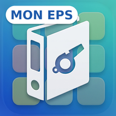

Confidentialité
- Pas de compte élève, pas de mot de passe, pas de publicité, pas de cookies de suivi, pas de mesure d'audience.
- Ce qui est saisi reste sur l'appareil (téléphone, tablette, ordinateur) tant que l'élève ne l'envoie pas à son professeur.
- Quand une donnée doit sortir de l'appareil (résultats d'un tournoi, carnet rendu au professeur), seuls le prénom et l'initiale du nom sont utilisés quand c'est possible.
1. Quelles données ?
- Le nom, le prénom et la classe saisis par l'élève ou importés par le professeur depuis Pronote, pour savoir à qui appartient un carnet.
- Ce que l'élève note pendant les cours : performances, temps, charges, ressentis, choix d'entraînement, observations et conseils du partenaire, résultats de matchs.
- Pour régler l'effort, l'élève peut noter son pouls ou signaler une douleur pendant un exercice. Aucun diagnostic ni motif médical n'est demandé : un élève dispensé ou blessé est seulement noté « absent, blessé ou adapté ».
2. Où sont-elles ?
Dans la mémoire du navigateur de l'appareil utilisé (stockage local). Elles ne sont visibles d'aucun autre appareil. Sur une tablette partagée, chaque élève ou groupe ferme son carnet en fin de séance. Le QR du jour affiché par le professeur limite les saisies aux heures de cours.
3. Quand sortent-elles de l'appareil ?
Seulement quand l'élève ou le professeur le décide, par l'un de ces moyens :
| Moyen | Ce qui part | Où |
|---|---|---|
| QR code | Le carnet de l'élève ou du binôme | Lu directement par l'outil du professeur, sans passer par internet. |
| Fichier rendu au professeur | Le carnet de l'élève | Déposé dans le Nuage apps.education (service de l'Éducation nationale), dans un dossier de dépôt du professeur. |
| Tournoi de tennis de table | Prénom et initiale, résultats des matchs | Tableur Grist de l'État (grist.numerique.gouv.fr), seulement si le professeur l'a activé pour la classe. |
| Outils de cycle du professeur (badminton, tennis de table) | Initiales et résultats | Tableur Google du professeur, seulement s'il a activé la synchronisation. |
Les fichiers exportés par le professeur (tableurs de notes, PDF) sont ensuite sous sa responsabilité.
4. Contenus chargés depuis d'autres sites
- Les applis sont hébergées sur GitHub Pages. Comme tout hébergeur, GitHub reçoit l'adresse IP de l'appareil qui ouvre la page (journaux techniques).
- Certaines fiches montrent des vidéos, de la plateforme PeerTube de l'Éducation nationale (apps.education) ou de YouTube en mode sans cookies (youtube-nocookie.com). La vidéo ne se charge que si on la lance.
- Quelques outils du professeur chargent une police ou une bibliothèque depuis Google Fonts ou cdnjs (Cloudflare) : ces services reçoivent l'adresse IP, rien d'autre.
5. Combien de temps ?
Les données restent sur l'appareil tant qu'on ne les efface pas. Elles sont à effacer à la fin de l'année scolaire, de même que les fichiers déposés par les élèves et les tableurs du professeur.
6. Effacer ou récupérer ses données
- Chaque appli propose d'envoyer le carnet (QR code ou fichier) et de fermer ou d'effacer le carnet.
- Effacer les données du site dans les réglages du navigateur, ou désinstaller l'appli, supprime tout ce qui est sur l'appareil.
7. Vos droits
Chaque élève et ses responsables légaux peuvent demander à consulter, corriger ou supprimer les données qui le concernent (règlement général sur la protection des données). La demande se fait auprès du professeur d'EPS, par la messagerie de l'ENT ou de Pronote. En cas de difficulté, on peut s'adresser au délégué à la protection des données de l'académie de Montpellier, puis à la CNIL (cnil.fr).
8. Responsable
Ces applis sont conçues par Y. Dartois, professeur d'EPS au lycée Georges Pompidou, pour ses cours. Les données sont traitées dans le cadre des missions d'enseignement et d'évaluation de l'établissement.
← Retour au portail Mon EPS